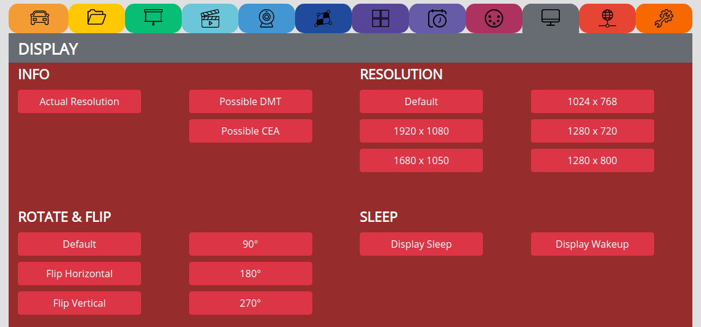
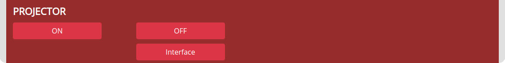

DISPLAY¶
INFO¶
Actual Resolution => See what resoultion we are currently displaying
Possible => Ask the attached device which resolution it is capable of
RESOLUTION¶
Default => Everytime we boot, we ask the attached device for the resolution
1920 x 1080 => Force the PocketVJ to always output in this resolution (needs reboot)
Note
Mapper will only work up to 1920 x 1080 resolution and default flip setting
If forced to 1920 x 1200 you may encounter glitch issues!
ROTATE & FLIP¶
Rotate or flip the output => Needs reboot
SLEEP¶
Set the display and GPU to sleep or wakeup
PROJECTOR¶
Note
Make sure to connect a PJlink compatible projector via rj45 cable
Default ip is: 192.168.2.254
Disable password and powersettings on projector
Some projectors act weird, this is not my fault, before complaining check if you are able to power them off from CP
You are able to control several projectors, give them all the same ip or add their Ip to the script
see video tutorial: https://video.pocketvj.com/AVideo/video/25/pocketvj-pjlink-a-projector